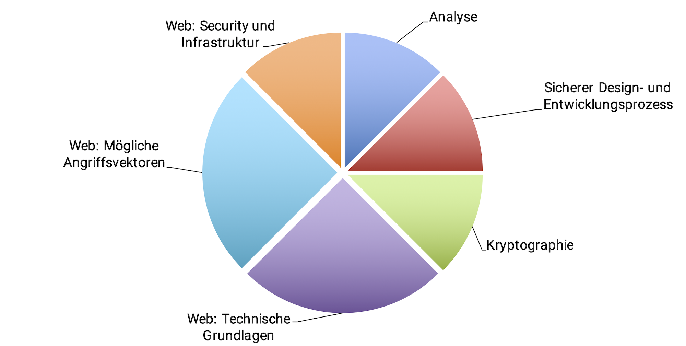

© (Copyright), International Software Architecture Qualification Board e. V. (iSAQB® e. V.) 2020
Die Nutzung des Lehrplans ist nur unter den nachfolgenden Voraussetzungen erlaubt:
-
Sie möchten das Zertifikat zum CPSA Certified Professional for Software Architecture Advanced Level® erwerben. Für den Erwerb des Zertifikats ist es gestattet, die Text-Dokumente und/oder Lehrpläne zu nutzen, indem eine Arbeitskopie für den eigenen Rechner erstellt wird. Soll eine darüber hinausgehende Nutzung der Dokumente und/oder Lehrpläne erfolgen, zum Beispiel zur Weiterverbreitung an Dritte, Werbung etc., bitte unter info@isaqb.org nachfragen. Es müsste dann ein eigener Lizenzvertrag geschlossen werden.
-
Sind Sie Trainer oder Trainingsprovider, ist die Nutzung der Dokumente und/oder Lehrpläne nach Erwerb einer Nutzungslizenz möglich. Hierzu bitte unter info@isaqb.org nachfragen. Lizenzverträge, die alles umfassend regeln, sind vorhanden.
-
Falls Sie weder unter die Kategorie 1. noch unter die Kategorie 2. fallen, aber dennoch die Dokumente und/oder Lehrpläne nutzen möchten, nehmen Sie bitte ebenfalls Kontakt unter info@isaqb.org zum iSAQB e. V. auf. Sie werden dort über die Möglichkeit des Erwerbs entsprechender Lizenzen im Rahmen der vorhandenen Lizenzverträge informiert und können die gewünschten Nutzungsgenehmigungen erhalten.
Die Abkürzung "e. V." ist Teil des offiziellen Namens des iSAQB und steht für "eingetragener Verein", der seinen Status als juristische Person nach deutschem Recht beschreibt. Der Einfachheit halber wird iSAQB e. V. im Folgenden ohne die Verwendung dieser Abkürzung als iSAQB bezeichnet.
Verzeichnis der Lernziele
-
LZ 1-5: Abwägung von Sicherheit gegenüber anderen Qualitätsmerkmalen
-
LZ 1-6: Verständnis für Sicherheit als Prozess, nicht als einzelne Maßnahme
-
LZ 1-7: Verständnis für Sicherheit als Verantwortlichkeit aller Beteiligten
-
LZ 1-8: Gängige Richtlinien, Standards und Empfehlungen kennen
-
LZ 1-9: Gängige Klassifizierungssysteme für Sicherheitsprobleme kennen
-
LZ 2-1: Grundkonzept „Validierung aller Eingaben und Escaping aller Ausgaben“
-
LZ 2-5: Inhalte eines sicheren Entwicklungsprozesses und Beispielframeworks
-
LZ 2-6: Zugriffskonzepte auf Systemlandschaft, Artefakte und Quellcode
-
LZ 4-4: Sicherheitsrelevante Protokolle (beispielsweise TLS)
-
LZ 4-5: Gängige Autorisierungskonzepte und relevante Implementierungen
-
LZ 5-2: Spezielle Gefahren von Social Engineering bei Web-Anwendungen
-
LZ 5-5: Angriffe über die Laufzeitumgebung/Applikationsplattform
-
LZ 5-8: Wichtige Quellen über aktuelle Bedrohungen und Angriffe
Einführung: Allgemeines zum iSAQB Advanced Level
Was vermittelt ein Advanced Level Modul?
-
Der iSAQB Advanced Level bietet eine modulare Ausbildung in drei Kompetenzbereichen mit flexibel gestaltbaren Ausbildungswegen. Er berücksichtigt individuelle Neigungen und Schwerpunkte.
-
Die Zertifizierung erfolgt als Hausarbeit. Die Bewertung und mündliche Prüfung wird durch vom iSAQB benannte Experten vorgenommen.
Was können Absolventen des Advanced Level (CPSA-A)?
CPSA-A-Absolventen können:
-
eigenständig und methodisch fundiert mittlere bis große IT-Systeme entwerfen
-
in IT-Systemen mittlerer bis hoher Kritikalität technische und inhaltliche Verantwortung übernehmen
-
Maßnahmen zur Erreichung von Qualitätsanforderungen konzeptionieren, entwerfen und dokumentieren sowie Entwicklungsteams bei der Umsetzung dieser Maßnahmen begleiten
-
architekturrelevante Kommunikation in mittleren bis großen Entwicklungsteams steuern und durchführen
Voraussetzungen zur CPSA-A-Zertifizierung
-
erfolgreiche Ausbildung und Zertifizierung zum Certified Professional for Software Architecture, Foundation Level® (CPSA-F)
-
mindestens drei Jahre Vollzeit-Berufserfahrung in der IT-Branche; dabei Mitarbeit an Entwurf und Entwicklung von mindestens zwei unterschiedlichen IT-Systemen
-
Ausnahmen sind auf Antrag zulässig (etwa: Mitarbeit in Open-Source-Projekten)
-
-
Aus- und Weiterbildung im Rahmen von iSAQB-Advanced-Level-Schulungen im Umfang von mindestens 70 Credit Points aus mindestens drei unterschiedlichen Kompetenzbereichen
-
bestehende Zertifizierungen (etwa Sun/Oracle Java-Architect, Microsoft CSA) können auf Antrag angerechnet werden
-
-
erfolgreiche Bearbeitung der CPSA-A-Zertifizierungsprüfung

Grundlegendes
Was vermittelt das Modul „WEBSEC“?
Bei Entwurf und Entwicklung von Software gehören Sicherheitsanforderungen zu den wichtigsten Herausforderungen. Oftmals gibt es in IT-Systemen eine Vielzahl möglicher Angriffspunkte, die potenzielle Angreifer (mit entsprechendem Aufwand) erfolgreich ausnutzen könnten.
Häufig führt der Mangel an einfachen Grundkenntnissen zum Thema Sicherheit, hoher Zeitdruck oder Unachtsamkeit zu scheinbar kleinen Fehlern, die aber in punkto Sicherheit dann mit fatalen Folgen ausgenutzt werden können. Gerade Webanwendungen haben oft einen potentiell großen, weltweit verteilten Benutzerkreis mit Zugriff über das Internet. Dabei vergrößert sich der Kreis der Angreifer massiv und damit auch die Wahrscheinlichkeit, dass Fehler entdeckt und ausgenutzt werden. Außerdem sind Webanwendungen meistens schon kurz nach der Produktivstellung Opfer automatisierter Angriffsversuche. Informationssysteme werden gegebenenfalls nur von den eigenen Mitarbeitern genutzt und sind dadurch anderen Angriffsszenarien ausgesetzt. Embedded Systems schließlich sind mittlerweile fast überall zu finden, so dass Sicherheitsprobleme massive Auswirkungen haben können. Eine Möglichkeit für Updates ist gerade bei Embedded Systems nicht immer gegeben.
Wirft man einen Blick auf die häufigsten Angriffsmethoden, können diese meistens durch eine "saubere" Architektur und klare Kommunikation unterbunden werden. Dieser Lehrplan soll die etwas akademische Welt von Sicherheit in der Softwareentwicklung mit gängiger technischer Praxis verbinden.
Sicherheit kann nicht unabhängig von dem Einsatzkontext der Systeme betrachtet werden. Der Bezug auf Webanwendungen, Informationssystem oder Embedded Systems grenzt den Themenschwerpunkt ein und stellt sicher, dass die relevanten Informationen für die Sicherheit der jeweiligen Systeme vermittelt werden. Der Lehrplan fokussiert sich auf Webanwendungen, aber an den relevanten Stellen können stattdessen Inhalte zu Embedded Systems oder Informationssystemen eingefügt werden.
Abgrenzung
Dieser Lehrplan spart folgende Themenkomplexe aus:
-
Sicherheitsmaßnahmen wie zum Beispiel organisatorische Zugangs- bzw. Zutrittskontrollsysteme
-
Bauliche Maßnahmen zur Steigerung der Sicherheit von IT-Infrastruktur (beispielsweise Brandschutz, Schließsysteme)
-
Detaillierte Vorstellung bzw. Diskussion der gesetzlichen und juristischen Grundlagen
-
Hardware (Physische Angriffe, Biometrie, Emissionen)
Struktur des Lehrplans und empfohlene zeitliche Aufteilung
| Inhalt | Empfohlene Mindestdauer (min) |
|---|---|
1. Analyse |
135 |
2. Sicherer Design-/Entwicklungsprozess |
135 |
3. Kryptographie |
135 |
4. Web: Technische Grundlagen |
270 |
5. Web: Mögliche Angriffsvektoren |
270 |
6. Web: Security und Infrastruktur |
135 |
Summe |
1080 (18h) |

Dauer, Didaktik und weitere Details
Die unten genannten Zeiten sind Empfehlungen. Die Dauer einer Schulung zum Modul WEBSEC sollte mindestens 2 Tage betragen, kann aber länger sein. Anbieter können sich durch Dauer, Didaktik, Art und Aufbau der Übungen sowie der detaillierten Kursgliederung voneinander unterscheiden. Insbesondere die Art der Beispiele und Übungen lässt der Lehrplan komplett offen.
Lizenzierte Schulungen zu WEBSEC tragen zur Zulassung zur abschließenden Advanced-Level-Zertifizierungsprüfung folgende Credit Points) bei:
Methodische Kompetenz: |
10 Punkte |
Technische Kompetenz: |
20 Punkte |
Kommunikative Kompetenz: |
0 Punkte |
Voraussetzungen
Die Voraussetzungen für das Training hängen von dem Bereich ab, auf den sich das Training fokussiert.
Beispielsweise sind die Voraussetzungen für Sicherheit im Web-Bereich:
-
Grundkenntnisse Netzwerkkommunikation
-
Grundkenntnisse in Web-Technologien wie HTML, CSS und JavaScript
-
Grundkenntnisse in der Erstellung von Webanwendungen
Für Informationssystem und Embedded Systems ergeben sich andere Voraussetzungen. Grundkenntnisse über die Architektur und Implementierung solcher Systeme reichen jedoch aus.
Gliederung des Lehrplans
Die einzelnen Abschnitte des Lehrplans sind gemäß folgender Gliederung beschrieben:
-
Begriffe/Konzepte: Wesentliche Kernbegriffe dieses Themas.
-
Unterrichts-/Übungszeit: Legt die Unterrichts- und Übungszeit fest, die für dieses Thema bzw. dessen Übung in einer akkreditierten Schulung mindestens aufgewendet werden muss.
-
Lernziele: Beschreibt die zu vermittelnden Inhalte inklusive ihrer Kernbegriffe und -konzepte.
Dieser Abschnitt skizziert damit auch die zu erwerbenden Kenntnisse in entsprechenden Schulungen.
Ergänzende Informationen, Begriffe, Übersetzungen
Soweit für das Verständnis des Lehrplans erforderlich, haben wir Fachbegriffe ins iSAQB-Glossar aufgenommen, definiert und bei Bedarf durch die Übersetzungen der Originalliteratur ergänzt.
1. Analyse
Dauer: 105 Min. |
Übungszeit: 30 Min. |
1.1. Begriffe und Konzepte
Sicherheit in der Softwareentwicklung bedeutet oft einen höheren Aufwand bei Design, Entwicklung, Wartung und Betrieb einer Anwendung. Diese Maßnahmen sollen die Sicherheit der Anwendung erhöhen und damit grundsätzliche Architekturziele unterstützen. Dazu gehört als Grundlage eine Analyse der folgenden Aspekte: - schützenswerte Daten und Systemfunktionen, - potenzielle Angriffsvektoren - Umgang mit Problemen, die durch mögliche Sicherheitslücken entstehen. Hinzu kommen gängige Richtlinien und Standards. Diese Analysen dienen als Grundlage für alle weiteren Sicherheitskonzepte.
Wichtige Begriffe:
Risk Management, Risk Management Framework, Threat Modeling, Threat Management, Attack Tree, Angriffsvektor, Betriebskonzept, Audit, Richtlinien, Standards, Business Context analysis, Risk appetite
1.2. Lernziele
LZ 1-1: Risiken und Modelle
Zu einer ganzheitlichen Softwarearchitektur gehören:
-
Analyse von Risiken aus einer Security Perspektive
-
Gefahrensmodelle
-
Angriffsbäume
-
Bedrohungsanalyse
Einordnung der Risiken in Bezug auf die Architektur:
-
Anpassung von Qualitätszielen
-
Zusätzliche nichtfunktionale Anforderungen
-
die mögliche Anwendung von Secure Design Pattern
Verständnis für die Bedeutung von Risikomanagement und mögliche Maßnahmen über die Phasen:
-
Anforderungsanalyse
-
Architekturdesign
-
Entwicklungsprozess
-
Abnahme und Test
-
Betrieb und Infrastruktur
Diese Phasen sind unabhängig von Vorgehensmodellen. Agile Prozesse und ein Wasserfall-Prozess durchlaufen beide diese Phasen, nur in unterschiedlicher Frequenz.
LZ 1-2: Die grundlegenden Schutzziele
Zu den Schutzzielen zählen:
-
Vertraulichkeit
-
Integrität
-
Authentizität
-
Verfügbarkeit
-
Verbindlichkeit
-
Anonymität
-
Zurechenbarkeit
Die Teilnehmer sollen nach dem Training die Schutzziele kennen und ihre Bedeutung einschätzen können.
LZ 1-3: Assets-Identifikation und Zugriffskonzepte
Die Teilnehmer sollen in der Lage sein, schützenswerte Assets (zum Beispiel schützenswerte oder personenbezogene Daten) zu identifizieren und zu klassifizieren. Außerdem sollten sie mit Zugriffskonzepten umgehen können. Dazu ist es notwendig, Zugriffskonzepte zu verstehen und unterschiedliche Arten von Konzepten zu kennen (ACL, rollenbasiert, etc.).
LZ 1-4: Kriterien zur Abnahme und Audit identifizieren
Nach der Identifikation von schützenswerten Assets lassen sich daraus Maßnahmen zum Schutz dieser Assets ableiten. Die Umsetzung dieser Maßnahmen sollte bei einer Abnahme nach vorher bekannten Kriterien überprüft werden.
LZ 1-5: Abwägung von Sicherheit gegenüber anderen Qualitätsmerkmalen
Die Teilnehmer sollen die Abwägung von Sicherheit gegenüber Qualitätsmerkmalen (z.B.: Benutzbarkeit, ISO25010 vormals 9126) oder dem eigenen Geschäftszweck (Business Context Analysis) verstehen.
LZ 1-6: Verständnis für Sicherheit als Prozess, nicht als einzelne Maßnahme
LZ 1-7: Verständnis für Sicherheit als Verantwortlichkeit aller Beteiligten
LZ 1-8: Gängige Richtlinien, Standards und Empfehlungen kennen
-
ISO 27000 (Information Technology - Security Techniques)
-
ÖNORM A 7700 (Sicherheitstechnische Anforderungen an Webapplikationen)
-
BSI Grundschutz
-
Common Criteria for Information Technology Security Evaluation (ISO 15408)
-
OWASP (Open Web Application Security Project)
-
PCI-DSS (Payment Card Industry Data Security Standard)
-
DS-GVO (Datenschutzgrundverordnung)
-
Verordnungen über Sicherheit bei Auftragsdatenverarbeitung
-
Juristische Haftung bei Sicherheitsproblemen
LZ 1-9: Gängige Klassifizierungssysteme für Sicherheitsprobleme kennen
-
CVSS (Common Vulnerability Scoring System)
-
OWASP Rating
LZ 1-10: Gängige Zertifizierungen einordnen
2. Sicherer Entwurfs- und Entwicklungsprozess
Dauer: 105 Min. |
Übungszeit: 30 Min. |
2.1. Begriffe und Konzepte
Sicherheit muss schon bei der Entstehung einer Anwendung beachtet werden. Dies zieht sich über alle Phasen der Entwicklung. Sicherheitsspezifische Entwurfsentscheidungen beziehen sich oft auf konkrete Anforderungen. Jedoch gibt es etablierte Werkzeuge und Vorgehensmodelle, um Entwurf und Implementierung grundsätzlich sicherer zu gestalten.
Wichtige Begriffe:
Dokumentation Sicherheitskonzept, Zugriffskonzept, sichere Entwicklungsinfrastruktur, Umgang mit 3rd Party Code, unterstützende Werkzeuge, Application Security Lifecycle, Security by Design
2.2. Lernziele
LZ 2-1: Grundkonzept „Validierung aller Eingaben und Escaping aller Ausgaben“
Die meisten Angriffe basieren entweder auf der fehlenden Validierung von Benutzereingaben oder dem nicht vorhanden Escaping von Ausgaben der Anwendung. Ein sicheres Applikationsdesign vereinfacht in der Implementierung diese Grundregeln.
LZ 2-2: Prinzip Security-Gates, Review und "Trust-No-One
Weitere Prinzipien legen beim Design, Entwicklung und der Teamkultur den Grundstein für eine sichere Anwendung. Dazu gehört das klassische „Vier-Augen-Konzept“ genauso wie „Vertraue niemandem – dokumentiere die Ausnahmen“, „A chain is only as strong as its weakest link“.
LZ 2-3: Indikatoren für sicheres Applikationsdesign
-
Einhaltung der dokumentierten Architekturvorgaben
-
Einhaltung eines dokumentierten Entwicklungsprozesses
-
Regelmäßige Reviews (zum Beispiel 4-Augen Prinzip)
-
Abgeleitete Maßnahmen aus der Bedrohungsanalyse
LZ 2-4: Grundlegende Pattern für "Secure Coding Guidelines"
-
Eigene Pattern zu Security finden
Weitere Beispiele:
-
Secure Factory
-
Secure State Machine
-
Secure Logger
-
…
LZ 2-5: Inhalte eines sicheren Entwicklungsprozesses und Beispielframeworks
-
OWASP SAMM
-
MS SDL
-
BSIMM
-
Eigene Ableitungen von Best Practices passend für das eigene Unternehmen
LZ 2-6: Zugriffskonzepte auf Systemlandschaft, Artefakte und Quellcode
-
Das Erstellen von Zugriffskonzepten
-
Das Ausgestalten von Security-relevanten Abnahmekriterien
-
Wie Veränderungen an einer Applikation vollständig protokolliert werden
-
Wie mit 3rd Party Code sicher umgegangen werden kann (Dependency Management)
-
Wie funktioniert Penetration Testing als Audit Methode
-
Welche Testmöglichkeiten gibt es?
-
Einfluss eines sicheren Entwicklungsprozesses auf die Infrastruktur und Projektplanung
LZ 2-7: Welche Hilfsmittel und Infrastrukturkomponenten unterstützen den sicheren Entwicklungsprozess
-
Grundlegende Werkzeuge zur Unterstützung eines sichereren Entwicklungsprozesses
-
Grundlegende Security relevante Infrastrukturkomponenten
LZ 2-8: Abgrenzung der Analysemethoden
-
SAST (Static Application Security Testing)
-
DAST (Dynamic Application Security Testing)
-
IAST (Interactive Application Security Testing)
-
SCA (Software Composition Analysis)
LZ 2-9: Incident Management
-
Rückmeldung von Sicherheitslücken
-
Application Security Lifecycle
-
Patch Management
3. Kryptographie
Dauer: 135 Min. |
Übungszeit: 0 Min. |
3.1. Begriffe und Konzepte
Hashverfahren, Zufallszahlen, Entropie, Symmetrische Verschlüsslung, Asymmetrische Verschlüsslung, gängige Verfahren und ihre Lebenszeit, allgemeine Empfehlungen
3.2. Lernziele
LZ 3-1: Grundbegriffe
-
Kryptographie (Verschlüsselung) zur Geheimhaltung von Informationen
-
Grundbegriffe:
-
Integrität
-
Authentizität
-
Vertraulichkeit
-
Verbindlichkeit
-
Schutz vor ungewolltem /unbefugtem Zugriff
-
-
öffentliche versus vertrauliche Algorithmen (Kerckhoffs' Prinzip)
-
Heutiger Stand der Forschung: öffentliche Algorithmen, geheime Schlüssel
LZ 3-2: Hashing
-
Der Einsatz von Hash Verfahren
-
Gängige Verfahren
-
Bekannte Angriffe gegen Hashverfahren (z.B. Rainbow-Tables)
-
Salting
LZ 3-3: Verschlüsselungsverfahren
-
Den Einfluss von sicherer Zufallszahlenerzeugung auf die Verschlüsslung (Entropie)
-
Die Usecases und Verwendung von symmetrischer Verschlüsselung
-
Die Usecases und Verwendung von asymmetrischer Verschlüsselung
-
Gängige Verfahren und ihre empfohlene Lebenszeit
-
Konzept "Perfect-Forward-Secrecy"
LZ 3-4: Vertrauenskonzepte
-
CA Konzepte und PKI
-
Web of Trust
LZ 3-5: Praktischer Einsatz
-
Nutzung von Kryptographie-Bibliotheken und -Frameworks
-
Konzept der Crypto-Provider (Trennung von Schnittstelle und Implementierung)
-
Zertifikate (X.509)
-
Digitale Signaturen
4. Web: Technische Grundlagen
Dauer: 240 Min. |
Übungszeit: 30 Min. |
4.1. Begriffe und Konzepte
Konkrete Sicherheitsprobleme wie Authentifizierung oder sichere Datenübertragung werden oft mit technisch ähnlichen Maßnahmen gelöst. Diese Lösungen setzen teilweise ein bestimmtes Anwendungsdesign voraus. Nachträgliches Refactoring in Richtung dieser Entwürfe ist oft mit hohen Aufwänden verbunden und an diesen kritischen Stellen fehleranfällig.
Dieser Teil bezieht sich auf die Sicherheit von Web-Systemen. Für Informationssysteme oder Embedded Systeme müssen entsprechend andere Inhalte vermittelt werden.
Wichtige Begriffe:
Authentifizierungskonzepte, Multi-Faktor, Single-Sign-On, Identity Management, Federation, Werkzeuge, sichere Protokolle, Autorisierungskonzepte
4.2. Lernziele
LZ 4-1: Gängige "Good Practices"
-
"Don’t do it yourself"
-
Externe Security-Reviews
-
Penetration Testing
LZ 4-2: Authentifizierungsarten
-
Multifaktor
-
HTTP Auth
-
Single Sign On
LZ 4-3: "Security through Obscurity" Schutzmaßnahmen
„Security through Obscurity“ Maßnahmen alleine reichen nicht aus um ein sicheres System umzusetzen, können aber eine hilfreiche Unterstützung sein, um Angriffsvektoren zu verkleinern und dem Angreifer möglichst wenige Informationen zur Verfügung zu stellen.
LZ 4-4: Sicherheitsrelevante Protokolle (beispielsweise TLS)
LZ 4-5: Gängige Autorisierungskonzepte und relevante Implementierungen
-
Zustandslosigkeit vs. Zustandsbehaftet
-
OAuth (Open Standard for Authorization) / OpenID Connect
-
OpenID
-
SAML (Security Assertion Markup Language)
-
JWT (JSON Web Tokens)
LZ 4-6: Unterstützende Werkzeuge
-
Review
-
Code/Projekt-Analyse
-
Integration Build Prozess
-
ggf. können weitere Werkzeuge im Training erläutert werden
5. Web: Bekannte Angriffe und Angriffsvektoren
Dauer: 240 Min. |
Übungszeit: 30 Min. |
5.1. Begriffe und Konzepte
Auch wenn Angriffsmethoden wie zum Beispiel "SQL Injections" seit mehreren Jahrzehnten bekannt sind, zeigt deren Verbreitung, dass dieses Problem immer noch besteht. Gerade bei Webanwendungen zeigt sich ein immer wiederkehrendes Muster von Angriffen. Ein Verständnis gängiger Angriffe ist Grundvoraussetzung für Entwurf und Entwicklung sicherer Anwendungen.
Dieser Teil bezieht sich auf die Sicherheit von Web-Systemen. Für Informationssysteme oder Embedded Systeme müssen entsprechend andere Inhalte vermittelt werden.
Wichtige Begriffe:
Angriffsvektoren, Angriffe in Netzwerken, gängige Angriffsmethoden im Web, Injection, Fuzzing, Hijacking, Cross-Site-Angriffe, Social Engineering, Denial-of-Service (DoS), Credential stuffing
5.2. Lernziele
LZ 5-1: Angriffsvektoren und Einordnung
Die Teilnehmer sollen die üblichen Angriffsvektoren kennen und Architekturspezifisch einordnen können
-
Applikationsschicht
-
Betriebssystem und Container-Schicht
-
Netzwerkschicht
-
Design-Schicht
-
Prozessschicht
LZ 5-2: Spezielle Gefahren von Social Engineering bei Web-Anwendungen
LZ 5-3: Injection Angriffe
-
Wie funktionieren Injection-Angriffe?
-
Welche Entwurfsentscheidung erschweren Injection-Angriffe
LZ 5-4: Bedeutung und Funktionsweise von Denial-of-Service (DoS) und Distributed-Denial-of-Service (DDoS) Angriffen
-
Wie funktionieren DoS und DDoS Angriffe?
-
Welche Entwurfsentscheidungen können DoS und DDoS Angriffe erschweren?
-
Wie kann man im laufenden Betrieb solche Angriffe erkennen?
-
Bedeutung von Botnetzen
LZ 5-5: Angriffe über die Laufzeitumgebung/Applikationsplattform
-
Verschlüsslung (temporärer) Daten
-
Bedeutung von Swapping
-
Backdoors
-
In-Memory Attacken
LZ 5-6: Auffinden von Sicherheitslücken über Fuzzing
-
Welche Probleme sind durch Fuzzing zu finden
-
Fuzzing als Blackboxtest
-
Gegenmaßnahmen und Wirkung
LZ 5-7: Man-In-The-Middle Angriffe
-
Wie funktionieren MITM Angriffe?
-
Welche möglichen Gegenmaßnahmen können MITM Angriffe erschweren und/oder verhindern?
-
Wie kann man MITM Angriffe erkennen?
LZ 5-8: Wichtige Quellen über aktuelle Bedrohungen und Angriffe
Es gibt eine Reihe bekannter, herstellerneutraler Websites, die aktuelle Angriffe und Bedrohungen publizieren und erläutern.
-
SANS25
-
OWASP Top Ten
6. Web: Security und Infrastruktur
Dauer: 135 Min. |
Übungszeit: 0 Min. |
6.1. Begriffe und Konzepte
Webanwendungen laufen nicht als völlig isolierte Systeme, sondern sind von Infrastruktur umgeben. Um die Sicherheit zu erhöhen kommen immer wieder die gleichen Komponenten zum Einsatz. Dabei geht es nicht um spezifische Produkte eines Herstellers, sondern um die grundlegenden Ideen und Konzepte hinter diesen.
Dieser Teil bezieht sich auf die Sicherheit von Web-Systemen. Für Informationssysteme oder Embedded Systeme müssen entsprechend andere Inhalte vermittelt werden.
Wichtige Begriffe:
WAF, DMZ, Firewall, IDS, IPS, Logging, Monitoring, Ongoing Feedback
6.2. Lernziele
LZ 6-1: Funktion/Arbeitsweise und Prozesse von Firewalls
-
Paketfilterung
-
Zonenkonzept im Betrieb
-
Einsatz und Architekturauswirkungen einer DMZ
LZ 6-2: Web Application Firewalls
LZ 6-3: Intrusion Detection / Prevention Systeme
LZ 6-4: Validierung durch Feedback aus dem Betrieb
Feedback Kanäle können unter anderem sein:
-
Logging
-
Monitoring
-
Feste Feedback Prozesse / Schnittstellen
LZ 6-5: Einsatz von TLS
-
Konzept von Transport-Layer-Security
-
Einsatz auch innerhalb geschlossener Netze
Referenzen
Dieser Abschnitt enthält Quellenangaben, die ganz oder teilweise im Curriculum referenziert werden.
A
B
-
[BSI Grundschutz] BSI IT-Grundschutz: "Umfassende Ein- und Ausgabevalidierung bei Webanwendungen und Web-Services", https://www.bsi.bund.de/DE/Themen/ITGrundschutz/ITGrundschutzKataloge/Inhalt/_content/m/m04/m04393.html
C
-
[CERT] CERT: "Top 10 Secure Coding Practices", https://www.securecoding.cert.org/confluence/display/seccode/Top+10+Secure+Coding+Practices
F
-
[FIRST] FIRST, Common Vulnerability Scoring System, https://www.first.org/cvss
M
O
-
[OWASP TM] OWASP Wiki: "Threat Modelling", https://www.owasp.org/index.php/Application_Threat_Modeling
-
[OWASP RRM] OWASP Wiki: "Risk Rating Methodology", https://www.owasp.org/index.php/OWASP_Risk_Rating_Methodology
-
[OWASP SCP] OWASP Wiki: "Secure Coding Practices", https://www.owasp.org/index.php/OWASP_Secure_Coding_Practices_-_Quick_Reference_Guide
S
-
[Schneier 1996] Bruce Schneier: "Applied Cryptography", John Wiley & Sons 1996
-
[Schneier 1999] Bruce Schneier (1999), https://www.schneier.com/academic/archives/1999/12/attack_trees.html
-
[Security Patterns] Schumacher, Fernandez-Buglioni, Hybertson, Buschmann, Sommerlad: "Security Patterns", “Integrating Security and Systems Engineering”, Wiley 2005